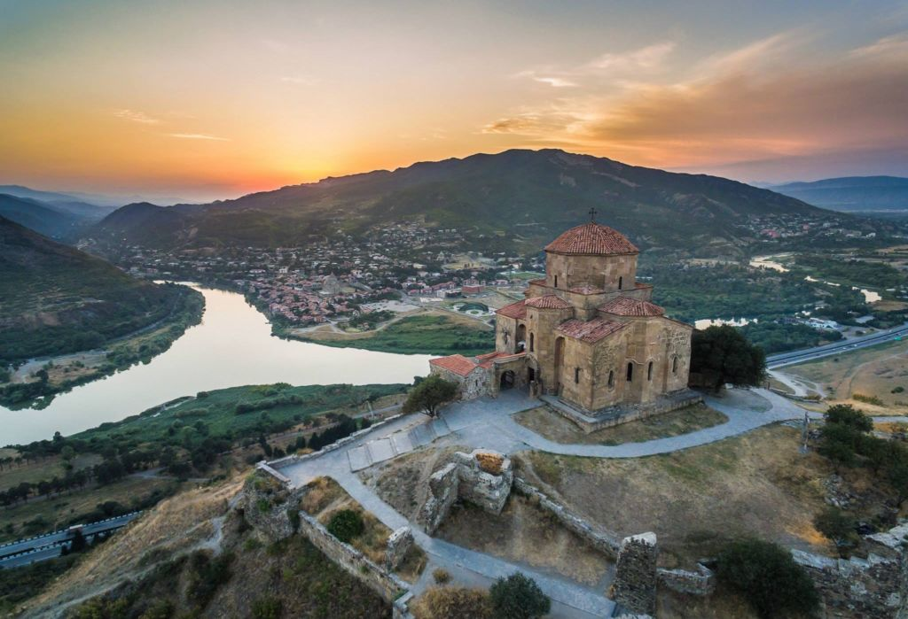
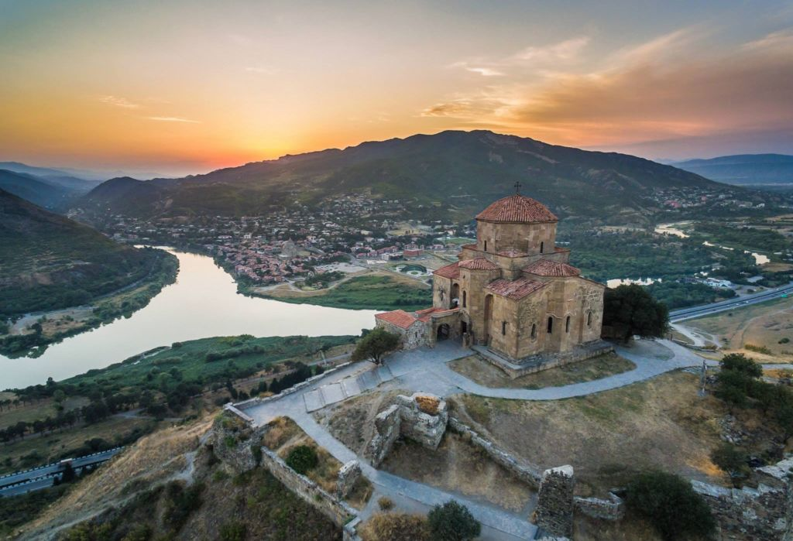
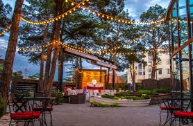
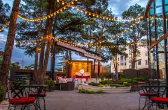

Здесь блюда тбилисской кухни готовят в атмосфере вечного лета, а подают их с традиционным грузинским гостеприимством
Городская суета, вечная спешка и усталость… Иногда хочется оказаться там, где течет другая – размеренная жизнь. Ресторан "Гостидзе" - уникальное место, где слились воедино стильный интерьер, грузинская кухня, летняя терраса и потрясающий вид. Это то место, где можно окунуться в атмосферу романтики, наблюдать потрясающую природу или раствориться в собственных мыслях…


 
